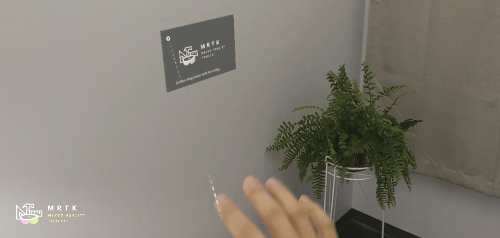
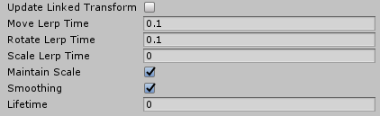
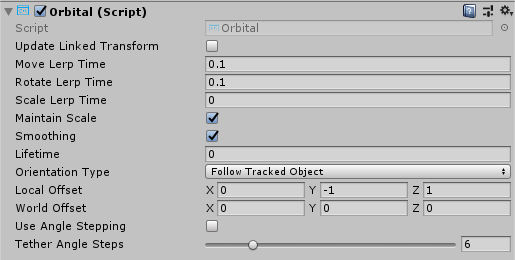
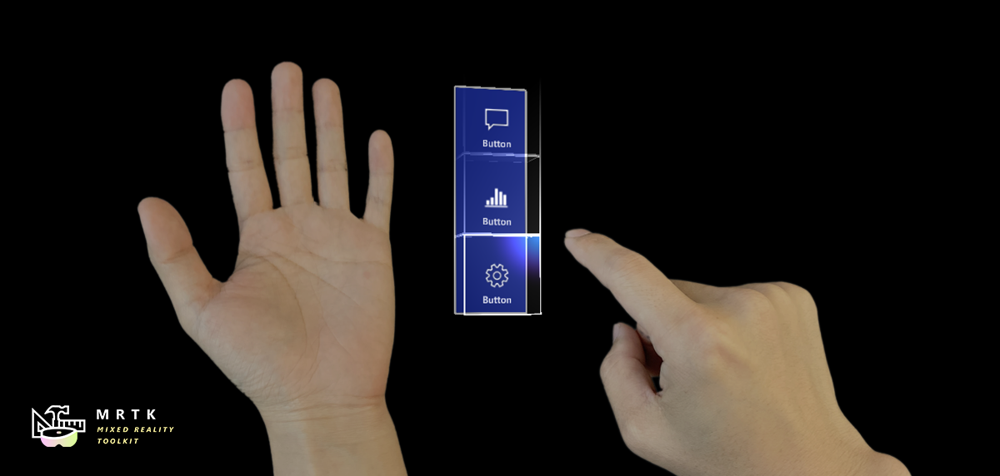
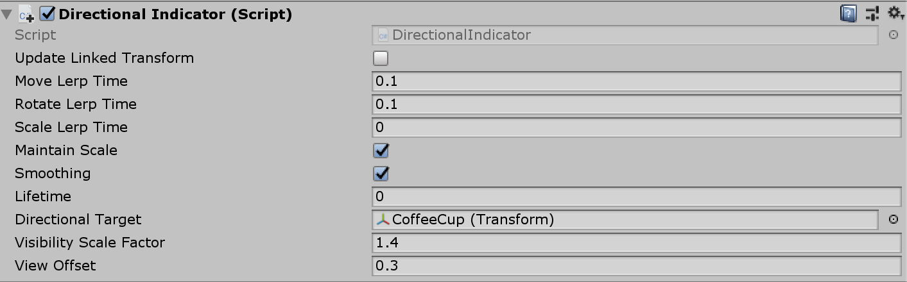
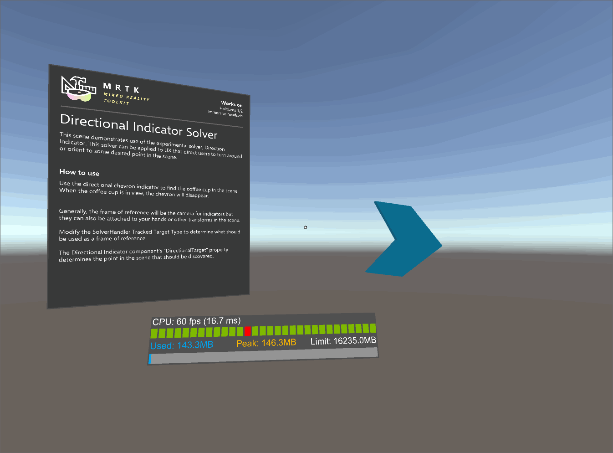

Solvers

Solvers是便于根据预定义算法计算对象的位置和方向的组件。一个例子可能是将一个物体放在用户当前的凝视射线投射的表面上。
此外，由于没有可靠的方法来统一组件的更新顺序，Solvers系统确定性地定义了这些转换计算的操作顺序。
Solvers提供一系列将对象附加到其他对象或系统的行为。另一个例子是一个挂在用户前面的对象(基于摄像机)。Solvers也可以附加到控制器和对象上，使对象跟随控制器。所有的Solvers都可以安全地堆叠在一起，例如，一个跟随行为+表面磁性+动量(tag-along behavior + surface magnetism + momentum)。
如何使用 solver
Solver系统由三类脚本组成:
- 'Solver':所有Solvers派生的基本抽象类。它提供状态跟踪、平滑参数和实现、自动solver系统集成和更新顺序。
- 'SolverHandler':设置要跟踪的引用对象(例如:主相机转换、手动光线等)，处理solver组件的收集，并按适当的顺序执行更新。
第三类是solver本身。以下Solvers方案为基本行为提供了构建块:
Orbital: 锁定到指定位置并与参考对象偏移。ConstantViewSize: 按比例保持与引用对象的视图相关的常量大小。RadialView: 将对象保存在由引用对象强制转换的视图锥中。SurfaceMagnetism: 将射线投射到世界的表面，并使物体与表面对齐。Momentum: 应用加速度/速度/摩擦力来模拟物体被其他Solvers/组件移动的动量和弹性。InBetween: 在两个被跟踪的对象之间保留一个对象。HandConstraint: 约束对象在不与游戏对象和手相交的区域内跟随手移动。适用于手动约束的交互式内容，如菜单等。这个Solvers方案是打算与IMixedRealityHand协同，但也与IMixedRealityController协同。HandConstraintPalmUp: 派生自HandConstraint，但包含测试激活前palm是否面向用户的逻辑。这个Solvers只适用于IMixedRealityHand控制器，对于其他控制器类型，这个Solvers的行为就像它的基类一样。
为了使用Solver系统，只需将上面列出的组件之一添加到GameObject即可。因为所有的Solvers都需要一个SolverHandler，一个将由Unity自动创建。
Note
如何使用Solvers系统的例子可以在SolverExamples.scene文件中找到。
如何更改跟踪引用（tracking reference）
SolverHandler组件的Tracked Target Type 属性定义了所有Solvers用于计算其算法的参考点。例如,值类型的Head:用一个简单的SurfaceMagnetism 组件将导致一个射线从头部和用户的目光的方向射出并且计算射中的表面。TrackedTargetType属性的潜在值为:
- Head : 参考点是主摄像头的变换
- ControllerRay: 引用点是在控制器(例如 运动控制器或手动控制器上的指针原点)上的
LinePointertransform，指向线射线的方向- 使用
TrackedHandedness属性选择handedness 首选项(即 左，右，两者都有)
- 使用
- HandJoint: 参考点是特定手关节的transform
- 使用
TrackedHandedness属性选择handedness 首选项(即 左，右，两者都有) - Use the
TrackedHandJoint属性确定要使用的关节变换
- 使用
- CustomOverride: 指定的
TransformOverride的参考点
Note
对于ControllerRay和HandJoint类型，Solvers处理程序将首先尝试提供左控制器/手转换，如果左控制器/手转换不可用，或者除非 TrackedHandedness属性另有规定，否则将尝试提供右控制器/手转换。
与每个TrackedTargetType相关联的各种属性的示例
如何串联 Solvers
它可以添加多个Solvers组件到同一个游戏对象，从而链接他们的算法。SolverHandler组件处理更新同一个游戏对象上的所有Solvers。默认情况下，SolverHandler在启动时调用GetComponents<Solver>()，它将按照在检查器中出现的顺序返回Solvers。
此外，将Updated Linked Transform属性设置为true将指示Solvers将其计算的位置、方向和比例保存为所有Solvers都可以访问的中间变量(即 GoalPosition)。当为false时，Solver将直接更新GameObject的transform。通过将transform属性保存到中间位置，其他Solvers能够从中间变量开始执行计算。这是因为Unity不允许更新 gameObject.transform到同一帧中的堆栈。
Note
开发人员可以通过设置SolverHandler.Solvers属性来修改Solver程序的执行顺序。
如何创建一个新的 Solver
所有Solvers必须继承自抽象基类Solver。Solver扩展的主要需求包括覆盖SolverUpdate方法。在这种方法中，开发人员应该将继承的GoalPosition、GoalRotation和GoalScale属性更新为所需的值。此外，利用SolverHandler.TransformTarget通常是有价值的，作为消费者期望的参考框架。
下面提供的代码给出了一个名为InFront的新Solvers组件的示例，该组件将附加的对象放在SolverHandler.TransformTarget的2m前面。如果SolverHandler.TrackedTargetType被用户设置为Head，然后是'SolverHandler.TransformTarget将是摄像机变换，因此该Solvers将附加的GameObject 置于每一帧用户注视的2m前方。
/// <summary>
/// InFront solver将一个物体放置在被跟踪目标前方2m处
/// </summary>
public class InFront : Solver
{
...
public override void SolverUpdate()
{
if (SolverHandler != null && SolverHandler.TransformTarget != null)
{
var target = SolverHandler.TransformTarget;
GoalPosition = target.position + target.forward * 2.0f;
}
}
}
Solvers实现指南
通用Solvers属性
每个Solvers组件都有一个控制核心Solvers行为的相同属性的核心集。
如果启用了平滑，那么Solvers将会随着时间的推移逐渐将GameObject的变换更新为计算值。此更改的速度由每个转换组件的LerpTime属性决定。例如，更高的MoveLerpTime值会导致帧与帧之间移动的增量变慢。
如果MaintainScale是启用的，那么Solvers将利用GameObject的默认本地规模。

所有Solvers组件继承的公共属性
轨道 Orbital
Orbital类是一个附加组件，它的行为类似于太阳系中的行星。这个Solvers将确保附加的GameObject绕被跟踪变换的轨道运行。因此,如果的SolverHandler 的Tracked Target Type 设置为 Head ,那么GameObject将用户的头部固定轨道偏移。
开发人员可以修改这个固定的偏移量，以保持菜单或其他场景组件在用户周围与眼睛水平或腰部水平等。这是通过修改Local Offset和World Offset属性来完成的。Orientation Type 属性决定了应用于对象的旋转，如果它应该保持原来的旋转，或者总是面对摄像机，或者无论变换是驱动它的位置等。

Orbital 示例
RadialView
RadialView是另一个跟随组件，它将GameObject的特定部分保留在用户视图的截锥体中。
Min & Max View Degrees属性决定了GameObject(游戏物体)中有多大的部分必须总是在视图中。
Min & Max Distance 属性决定了GameObject(游戏物体)应该与用户保持多远的距离。例如，以1m Min Distance 走向GameObject将会将GameObject推开，以确保它永远不会靠近用户1m。
通常，RadialView与 Tracked Target Type 设置为Head一起使用，以便组件跟随用户的视线。但是，这个组件可以保存在任何 Tracked Target Type 的 "view" 中。

RadialView 示例
InBetween
InBetween类将在两个转换之间保留附加的GameObject。这两个转换端点是由GameObject的自己的SolverHandler Tracked Target Type 和InBetween组件的**Second Tracked Target Type*属性定义的。通常，这两种类型都会被设置为CustomOverride 和由此产生的' SolverHandler.TransformOverride 和 InBetween.SecondTransformOverride的值设置为跟踪的两个端点。
在运行时，InBetween组件将基于Second Tracked Target Type和Second Transform Override属性创建另一个SolverHandler组件。
PartwayOffset定义了对象在两个transforms之间的直线上的位置，在中间位置放置0.5，在第一个transform位置放置1.0，在第二个transform位置放置0.0。
使用InBetween solver在两个transforms之间保持对象的例子
表面磁性 SurfaceMagnetism
SurfaceMagnetism的工作原理是:对一组表面的LayerMask执行一个射线投射，并将GameObject放在那个接触点上。
Surface Normal Offset将游戏物体放置在距离表面数米的地方，在法线的命中点的方向上。
相反地， Surface Ray Offset会将游戏物体放置在距离表面几米远的地方，但与射线投射的方向相反。因此，如果射线投射是用户的视线，那么GameObject将会沿着直线从表面的命中点移动到相机的方向。
Orientation Mode决定了相对于表面法线的旋转类型。
- None -没有旋转应用
- TrackedTarget -物体将面向被跟踪的transform驱动射线投射
- SurfaceNormal -物体将会基于在表面上命中点的法线对齐
- Blended -物体将基于法线在表面上的命中点和面向被跟踪的transform对齐。 要强制相关联的GameObject在除None之外的任何模式下保持垂直，启用 Keep Orientation Vertical。
Note
当Orientation Mode被设置为Blend时，使用Orientation Blend属性来控制旋转因子之间的平衡。0.0的值将完全由TrackedTarget模式驱动，1.0的值将完全由SurfaceNormal模式驱动。

决定什么表面可以被击中 Determining what surfaces can be hit
当向GameObject添加SurfaceMagnetism组件时，考虑GameObject及其子组件的层是很重要的，如果有碰撞器的话。组件的工作原理是执行各种类型的射线投射，以确定什么表面"磁铁"本身反对。如果Solver GameObject在SurfaceMagnetism的 MagneticSurfaces属性中列出的一个图层上有一个碰撞器，那么射线投射可能会击中它自己，导致GameObject附加到它自己的碰撞点上。这种奇怪的行为可以通过将主游戏对象和所有子对象设置为Ignore Raycast层或者适当地修改MagneticSurfaces LayerMask 数组来避免。
相反，SurfaceMagnetism GameObject(游戏物体)不会与未在MagneticSurfaces属性中列出的图层上的表面发生碰撞。通常建议将所有需要的表面放置在一个专用的层上(即 surface)，并将MagneticSurfaces 属性设置为这一层。使用default或everything可能会导致UI组件或光标贡献给Solvers。
最后，比MaxRaycastDistance属性设置更远的表面将被SurfaceMagnetism射线强制忽略。
带有HandConstraint和HandConstraintPalmUp的手部菜单

HandConstraint行为提供了一个Solvers，该Solvers将被跟踪的对象约束到一个对于手部·约束内容(如手动UI、菜单等)来说是安全的区域。安全区被认为是不与手相交的区域。HandConstraint的一个派生类称为HandConstraintPalmUp还包括包括演示当手掌面对用户时激活solver跟踪对象的常见行为。例如，这个行为的使用请参见下面的HandBasedMenuExample场景:MixedRealityToolkit.Examples/Demos/HandTracking/Scenes/
请参阅每个HandConstraint属性的工具提示，以获得更多文档。下面更详细地定义了一些属性。

- Safe Zone:安全区域(safe zone)指定了约束内容的位置。建议将内容放置在尺骨一侧，避免与手重叠，提高交互质量。安全区域的计算方法是将手的方向投影到与摄像机视图垂直的平面上，然后对手周围的包围框进行射线投射。安全区域被定义为使用
IMixedRealityHand，但也可用于其他控制器类型。建议探究每个安全区在不同控制器类型上表示的内容。

Activation Events:当前的
HandConstraint触发了四个激活事件(activation events)。这些事件可以用在许多不同的组合来创建独特的HandConstraint行为,请参见HandBasedMenuExample场景:MixedRealityToolkit.Examples/Demos/HandTracking/Scenes/ 为这些行为的例子。- OnHandActivate:当一只手满足IsHandActive方法时触发
- OnHandDeactivate:当IsHandActive方法不再被满足时触发。
- OnFirstHandDetected:当手的跟踪状态从无手状态变为有手状态时触发。
- OnLastHandLost:当手的跟踪状态从至少有一只手在视图中变为没有手在视图中时触发。
试验性 Solvers
这些Solvers方案在MRTK中是可用的，但目前还处于试验阶段。它们的api和功能可能会改变。此外，它们的健壮性和质量可能低于标准特性。
Directional Indicator
DirectionalIndicator类是一个跟踪组件，它将自己定向到空间中需要的点的方向。
最常用的情况是SolverHandler的Tracked Target Type被设置为 Head。在这种情况下，带有DirectionalIndicator 的UX组件将引导用户查看所需的空间点。
所需的空间点是通过Directional Target属性确定的。
如果用户可视的方向目标,或任何参照系中设置SolverHandler,那么这个Solvers将禁用所有下面的Renderer组件。如果不可见，那么将在指示器上启用所有内容。
- Visibility Scale Factor -倍增器，以增加或减少FOV，确定Directional Target 点是否可见
- View Offset -从参照系的角度(即 可能是相机)这个属性定义了物体在指示器方向上应该离视口中心多远。

Directional Indicator properties

Directional Indicator Example Scene